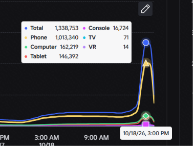

Break and Steal an Egg a atins ~1,3 milioane de jucători simultan, pentru câteva ore

Break and Steal an Egg a avut un vârf uriaș duminică, 18 octombrie, în timpul Admin Abuse-ului. 🥚👻
Atenție: e un vârf temporar, de câteva ore. Nu înseamnă că jocul „are” 1,3M jucători.
Ce a arătat developerul:
- @monkisrok a postat o captură din Creator Analytics cu 1.338.753 de jucători simultan (CCU)
- Din aceștia, 1.013.340 erau pe telefon
- „1.33M CCU TODAY!! … TYSM FOR JOINING OUR ADMIN ABUSE👻”
Ce arată trackerele (Rolimon's, RBLXSTAT, RoVitals):
- Vârful a fost ~1,31M, în jurul orei 15:00 (ora României), pe 18 octombrie
- Până la 17:48 scăzuse deja la ~160K
- Într-o zi normală, jocul are ~210–245K jucători
Despre joc:
- Creat pe 5 septembrie de ILGames x Eggs
- E alt joc decât Steal An Egg, nu le confundați!
Ce urmează: pe 25 octombrie, la 15:00 (ora României), vine evenimentul „Something creepy is coming...”. 🎃
Notă: contul @monkisrok e mic și nu e verificat, dar handle-ul se potrivește cu owner-ul grupului jocului.
Postarea developerului: https://x.com/monkisrok/status/2111811993569304878
Vezi și: Break and Steal an Egg în viața reală, ideea de short care merge acum: https://pyromanc3r777.github.io/vexu-hq/posts/break-and-steal-an-egg-in-viata-reala.html
Update 22 oct: evenimentul „???” e confirmat pe pagina oficială, duminică 25 oct, 15:00 – luni 26 oct, 15:00 (ora României): https://pyromanc3r777.github.io/vexu-hq/posts/break-and-steal-an-egg-eveniment-misterios-25-octombrie.html
Follow pe TikTok @vexu_online + Subscribe pe YouTube la VEXU Online. Follow = Au ce bile! 💥